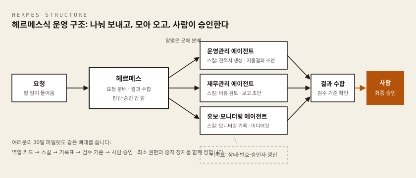
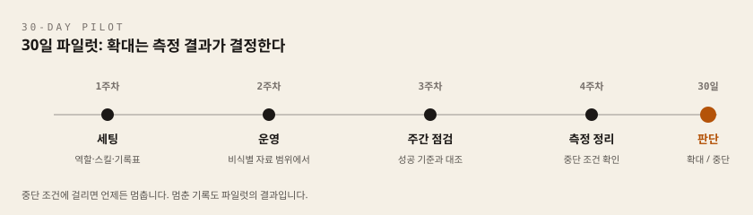

- 과정: 변호사 AX 나노디그리
- 차시: 7차시 / 총 7차시 (마지막 차시)
- 핵심 질문: 여러 단계의 AI 작업을 안전하게 잇고, 실험을 실제 업무로 옮기려면 무엇을 준비해야 하는가?
- 이 차시의 결과물: 30일 AX 파일럿 계획 1부
이 차시에서 준비할 것
이번 차시는 새 도구를 배우는 시간이 아니라, 1~6차시에서 만든 것을 하나의 흐름으로 조립하는 시간입니다. 그래서 앞 차시 결과물이 손에 있어야 시작할 수 있습니다.
앞 차시 결과물 (종이든 파일이든 상관없습니다)
| 차시 | 결과물 | 이번 차시에서 쓰는 곳 |
|---|---|---|
| 1차시 | AX 업무 지도 | 파일럿 대상 업무를 여기서 고릅니다 |
| 2차시 | 작업 환경 점검표 | 실행 환경과 계정 경계를 정합니다 |
| 3차시 | 법률업무 지시서 | 에이전트에게 줄 스킬 문서로 씁니다 |
| 4차시 | 리서치 검증표 | 성공 기준과 검증 절차의 재료입니다 |
| 5차시 | 문서 작성 워크플로 | 승인 관문의 골격이 됩니다 |
| 6차시 | 안전한 소통 시나리오 | 입력 자료 범위 기준이 됩니다 |
도구 (하나라도 미설치면 아래 링크로 먼저 설치)
| 도구 | 이번 차시에서 하는 일 | 설치가이드 |
|---|---|---|
| 대화형 AI (챗GPT·클로드 등) | 계획 초안 작성과 현실성 반박 | 웹 브라우저 로그인만 필요 |
| 윈도우 공통 준비 | 실습 폴더, PowerShell 사용 준비 | 공통 준비 설치가이드 |
| 헤르메스 | 워크플로 조율(요청 분배·결과 취합) | 헤르메스 설치가이드 |
| 안티그래비티 | 문서 작업 단계 담당 + korean-law-mcp를 연결하는 도구 | 안티그래비티 설치가이드 |
| 파이(Pi) | 웹 자료 조사·정리 단계 담당 (MCP 연결은 지원하지 않습니다) | 파이(Pi) 설치가이드 |
| korean-law-mcp | 법령·판례 인용 검증 단계 담당 | korean-law-mcp 설치가이드 |
도구가 아직 없어도 이번 차시는 진행할 수 있습니다. LAB 1~3의 핵심은 계획을 세우는 일이고, 계획서에는 "이 단계는 어느 도구가 맡는다"만 적으면 됩니다. 다만 LAB 1의 부품 점검 단계는 도구가 설치되어 있을 때 훨씬 정확해집니다.
복사·붙여넣기 방법 (이 차시 내내 씁니다)
- 코드 블록의 글을 마우스로 끌어 선택 →
Ctrl+C(복사) → AI 입력창에서Ctrl+V(붙여넣기). - (macOS:
Cmd+C/Cmd+V)
이 차시에서 처음 나오는 말
이번 차시에 새로 나오는 말들입니다. 뒤에서 다시 설명하니 지금은 눈으로만 훑어도 됩니다.
일의 흐름에 관한 말
- 워크플로(workflow): 업무가 접수부터 완료까지 거치는 단계의 순서를 말합니다.
- 에이전트(agent): 사람이 준 목표에 따라 도구를 골라 쓰며 여러 단계를 스스로 진행하는 AI를 말합니다.
- 헤르메스(Hermes): 요청을 알맞은 에이전트에게 나눠 보내고 결과를 모아 보고하는 조율 도구입니다. 스스로 판단하거나 승인하지는 않습니다.
- 역할 카드: 사람 이름이 아니라
자료정리 담당,초안 담당처럼 책임 단위로 에이전트를 나눠 적은 카드입니다. - 스킬: 에이전트가 일할 때 펼쳐 보는 지시 문서입니다. 사람으로 치면 업무 매뉴얼이며, 3차시 법률업무 지시서가 그대로 스킬이 됩니다.
- 기록표: 일감이 시작·진행·완료·승인 중 어느 상태인지 추적하는 표입니다.
안전장치에 관한 말
- 도구 호출: AI가 검색, 문서 읽기, 메시지 발송 같은 외부 기능을 직접 실행하는 행위입니다.
- 최소 권한: 업무에 꼭 필요한 만큼만, 필요한 기간 동안만 권한을 여는 원칙입니다.
- 감사 로그: 누가, 언제, 어떤 입력과 도구로 무엇을 실행했는지 남기는 기록입니다.
- 승인 지점: 다음 단계로 넘어가기 전에 사람이 확인하는 자리입니다.
- 중지 장치: 오류나 위험이 발견됐을 때 자동 실행과 권한을 즉시 멈추는 통제 수단입니다.
운영·관리에 관한 말
- 파일럿(pilot): 전면 도입 전에 작은 범위에서 30일간 시험 운영해 보는 것을 말합니다.
- 비식별 자료: 누구인지 특정할 수 없게 이름·연락처·사건번호를 지운 자료를 말합니다.
- 위험 등급: 오류 가능성과 피해 크기를 기준으로 업무를 낮음·중간·높음으로 나눈 관리 단계입니다.
- 책임자: 허용 범위와 결과에 최종 책임을 지는 사람입니다.
- 사고 대응: 오류, 정보 노출, 오작동이 났을 때 탐지·중지·보고·복구하는 절차입니다.
- 변경 관리: 모델, 프롬프트, 자료, 권한이 바뀔 때 영향과 승인을 기록하는 절차입니다.
- MCP(Model Context Protocol): AI 도구에 외부 데이터 창구를 붙이는 연결 규격입니다. korean-law-mcp는 법제처 공식 데이터를 그 창구로 연결해 주는 도구입니다.
이 차시에서 배우는 것
여섯 차시 동안 만든 결과물은 아직 실험실 안의 부품입니다. 업무 지도, 환경 점검표, 지시서, 검증표, 문서 작성 워크플로, 소통 시나리오는 각각 따로 작동하지만, 실제 업무는 이 부품들이 하나의 흐름으로 연결되어 매주 반복될 때 비로소 바뀝니다. 마지막 차시는 이 연결을 설계하고, 실험을 실제 업무로 옮기는 관문을 세우는 시간입니다.
관문이 필요한 이유는 분명합니다. 실험이라는 이름으로 의뢰인에게 위험을 전가해서는 안 되기 때문입니다. 그래서 이 차시는 두 가지를 함께 다룹니다.
- 운영 설계: 자동화 아이디어를 역할 카드, 스킬, 기록표로 구성한 워크플로로 세우고, 권한·기록·승인·중지 장치를 붙입니다.
- 30일 파일럿 계획: 제한된 업무와 자료, 기간 안에서 효과와 위험을 측정하고, 그 측정 결과로 확대 여부를 결정합니다.
수업 앞부분은 「AI 에이전트로 만드는 나만의 업무 경쟁력」 세션입니다. 자동화 아이디어를 도출하고, 헤르메스식 워크플로를 세팅하고, 에이전트 개발을 진행합니다. 뒷부분은 「내가 AI 에이전트를 쓰는 에이전트다!」 세션입니다. 각자 만든 결과를 발표하고 30일 파일럿 실행을 다짐합니다.
수업을 마치면 다음을 할 수 있게 됩니다.
- 자신의 자동화 아이디어를 역할 카드, 스킬, 기록표로 구성한 헤르메스식 워크플로로 설계합니다.
- 도구 호출 권한(최소 권한), 감사 로그, 승인 지점, 중지 장치를 갖춘 운영 규칙을 정합니다.
- 위험 등급, 책임자, 사고 대응, 변경 관리를 담은 30일 파일럿 계획을 완성합니다.
개념 익히기 1: 워크플로에 안전장치를 붙이기
첫 번째 묶음은 워크플로를 세우고 그 위에 안전장치를 붙이는 개념들입니다.
워크플로
워크플로는 업무가 시작되어 완료될 때까지 이어지는 단계, 역할과 조건의 흐름입니다. 접수, 분류, 초안, 검토, 승인, 기록이 하나로 연결됩니다. "AI야 이 일 좀 해줘"는 실패하지만, "기록표를 보고 다음 단계를 진행한 뒤 상태를 갱신해줘"는 시작됩니다. 현재 업무의 예외와 책임자를 모른 채 자동화부터 시작하지 마세요. 워크플로를 종이에 먼저 그린 뒤 도구를 붙입니다.
도구 호출과 최소 권한
도구 호출은 AI가 검색, 문서 읽기, 메시지 발송 같은 외부 기능을 실행하는 행위입니다. 답변 생성보다 훨씬 큰 권한이 오갑니다. 그래서 최소 권한 원칙을 적용합니다. 에이전트에게 문을 열어 줄 때는, 꼭 필요한 방의 열쇠만 필요한 기간 동안 건넵니다.
- 전체 사건 폴더 대신 파일럿용 지정 폴더의 읽기 권한만 줍니다. 예를 들어
C:\Users\사용자이름\Desktop\AX실습폴더 하나만 열어 줍니다. - 외부 발송 도구는 사람의 승인 뒤에만 실행되게 합니다.
- 관리자 계정이나 공용 비밀번호를 에이전트에 제공하지 않습니다.
읽기와 초안 작성부터 허용하고, 바깥으로 나가는 행동은 전부 사람의 손을 거치게 하세요. 권한은 나중에 넓히기는 쉽지만 되돌리기는 어렵습니다.
감사 로그
감사 로그는 누가, 언제, 어떤 입력과 도구로 무엇을 실행했는지 추적하는 기록입니다. AI 결과, 사용 자료, 승인자, 외부 발송 여부를 남깁니다. 어떤 자료로 어떤 결과가 만들어졌는지 나중에 확인할 기록이 없다면, 문제가 생겼을 때 원인을 찾을 수 없습니다. 단, 로그 자체에 개인정보와 비밀정보가 과도하게 남지 않도록 관리해야 합니다.
승인 지점
승인 지점은 다음 단계로 넘어가기 전에 누가 확인하는지를 정한 자리입니다. 5차시에서 배운 승인 관문을 워크플로 전체로 확장한 것입니다. 승인자를 모호하게 두거나 자동 승인으로 대체하지 않습니다. 예를 들어 정형 안내 초안이 담당 변호사 확인 없이 의뢰인에게 자동 발송된다면, 승인 지점이 빠진 것입니다.
중지 장치
중지 장치는 오류나 위험이 발견됐을 때 자동 실행과 권한을 즉시 멈추는 통제 수단입니다. 중지 권한자와 재개 조건을 사전에 정해야 실제로 작동합니다. 오류가 반복되는데도 멈출 방법과 권한자가 정해져 있지 않다면, 워크플로는 아직 실제 업무에 들어갈 준비가 되지 않은 것입니다.
개념 익히기 2: 실험을 실제 업무로 옮기는 관리 개념
두 번째 묶음은 실험을 실제 업무로 옮길 때 필요한 관리 개념들입니다.
파일럿
파일럿은 제한된 사용자, 자료, 기간 안에서 효과와 위험을 검증하는 작은 실험입니다. 한 업무, 비식별 자료, 지정 담당자, 30일 기간으로 시작합니다. 성공 기준은 느낌이 아니라 측정 지표로 적습니다. 처리 시간, 수정 횟수, 검증 통과율, 승인 반려 사유의 수 같은 숫자입니다.
위험 등급
위험 등급은 오류 가능성과 피해 크기를 기준으로 업무를 나눈 관리 단계입니다. 등급이 통제 수준을 정합니다.
| 위험 등급 | 기준 | 통제 수준 예시 |
|---|---|---|
| 낮음 | 공개 자료, 내부 참고용 결과 | 사후 점검, 주 1회 기록 확인 |
| 중간 | 비식별 자료, 정형 안내 초안 | 발송 전 승인, 감사 로그 필수 |
| 높음 | 기밀·법적 영향이 큰 업무 | 파일럿 대상에서 제외, 사람의 판단 유지 |
효율이 높다는 이유로 고위험 업무의 통제를 낮추지 않습니다. 첫 파일럿은 낮음 또는 중간 등급에서만 고릅니다.
책임자
책임자는 허용 범위와 결과에 최종 책임을 지는 사람입니다. 등급마다 책임자를 지정하고, 승인자·장애 연락처·중단 권한자를 겸하거나 나눠 맡습니다. AI 공급자나 도구 이름을 내부 책임자의 대체물로 두지 않습니다. "이 도구가 알아서 한다"는 책임자가 없다는 뜻입니다.
사고 대응
사고 대응은 오류, 정보 노출, 오작동이 발생했을 때 탐지·중지·보고·복구하는 절차입니다. 사고가 나면 무엇을 할지, 절차를 미리 정해 둡니다. 누구에게 언제 알리고 어떤 기록을 보존할지 미리 정하고, 원인 분석 전에 로그와 변경 이력을 삭제하거나 덮어쓰지 않습니다.
변경 관리
변경 관리는 모델, 프롬프트, 자료, 권한이 바뀔 때 영향과 승인을 기록하는 절차입니다. 같은 서비스 이름이라도 모델 업데이트로 결과가 달라질 수 있습니다. 파일럿 기간 중에 도구가 업데이트되면 이전 검증 결과를 그대로 믿을 수 없습니다. 바뀐 것을 적고, 변경 전후 결과를 비교해 다시 확인한 뒤에 계속 갑니다.
헤르메스식 운영 설계: 역할 카드·스킬·기록표

헤르메스는 요청을 알맞은 에이전트에게 나눠 보내고, 결과를 모아 보고합니다. 스스로 판단하거나 승인하지 않습니다. 헤르메스식 세팅은 이 구조를 따라 나만의 워크플로를 세 가지 부품으로 시작하는 방법입니다. (헤르메스를 아직 설치하지 않았다면 헤르메스 설치가이드를 참고하시되, 설계 자체는 종이에 먼저 그려도 됩니다.)
- 역할 카드: 사람 이름이 아니라 책임 단위로 에이전트를 나눕니다. 예를 들어
자료정리 담당→초안 담당→검수 담당처럼, 각 역할이 맡는 일과 결과물을 넘길 다음 역할을 정합니다. - 스킬: 반복 업무의 순서, 형식, 확인 항목을 글로 적습니다. 3차시에서 작성한 법률업무 지시서가 그대로 스킬 문서가 됩니다. 새로 쓰는 것이 아니라 이미 만든 것을 옮겨 담는 것입니다.
- 기록표: 일의 상태를 시작·진행·완료·승인으로 추적하는 표를 둡니다. 무엇이 끝났는지 아무도 모르는 상황을 막는 장치입니다.
이 세 부품 위에 앞에서 배운 안전장치를 얹으면 운영 설계가 완성됩니다. 열어 줄 권한과 열어 주지 않을 권한, 사람의 승인 뒤에만 실행되는 행동, 중지 권한자와 중지 방법, 다시 시작하는 조건까지 적어 두면, 워크플로는 실험실 밖으로 나갈 준비가 된 것입니다.
법령이나 판례가 한 줄이라도 들어가는 업무라면, 역할 카드에 인용 검증 담당을 한 자리 더 두시기 바랍니다. 4차시에서 쓴 korean-law-mcp가 이 자리를 맡습니다. AI는 그럴듯한 조문 번호와 사건번호를 지어내는 일이 있는데, 이 부품이 법제처 공식 데이터로 실존 여부와 판례의 유효 여부를 대조합니다.
30일 파일럿의 원칙

파일럿 계획을 세우기 전에, 두 가지 원칙을 먼저 기억해 주세요.
- 실험이라는 이름으로 의뢰인에게 위험을 전가하지 않습니다. 파일럿은 비식별 자료 범위 안에서만 진행하고, 실제 의뢰인의 이름·연락처·사건번호를 사용하지 않습니다. 고위험 업무는 파일럿 대상에서 제외합니다.
- 확대는 기대가 아니라 측정 결과가 결정합니다. 30일이 끝나면 확대, 조건부 지속, 중단 세 갈래 중 하나를 고르는데, 어느 쪽이든 측정 지표가 판단합니다.
이 원칙 위에서 파일럿 계획은 여섯 칸으로 구성됩니다.
- 대상 업무 1개
- 비식별 자료 범위
- 성공 기준(측정 지표)
- 주간 점검 일정
- 중단 조건
- 종료 후 확대·중단 판단 기준
중단 조건은 발동되면 논의 없이 멈추는 선입니다. 예를 들어 비식별 처리가 뚫린 입력이 발견될 때, 검증에서 같은 유형의 오류가 반복될 때입니다. 종료 후 판단 기준은 시작 전에 세 갈래(확대·조건부 지속·중단)로 미리 적어 둡니다.
과정 전체 되짚기: 여섯 개의 결과물이 파일럿의 재료가 됩니다
파일럿 계획은 새로 쓰는 문서가 아니라, 여섯 차시의 결과물을 한 장으로 조립하는 문서입니다.
| 차시 | 결과물 | 파일럿 계획에서의 역할 |
|---|---|---|
| 1차시 | AX 업무 지도 | 파일럿 대상 업무를 고르는 후보 목록 |
| 2차시 | 에이전트 작업 환경 점검표 | 파일럿을 돌릴 실행 환경과 계정 경계 |
| 3차시 | 법률업무 지시서 | 에이전트에게 줄 스킬 문서의 원형 |
| 4차시 | 리서치 검증표 | 성공 기준과 결과 검증 절차 |
| 5차시 | 문서 작성 워크플로 | 단계 연결과 승인 관문의 골격 |
| 6차시 | 안전한 소통 시나리오 | 입력 자료 범위와 의뢰인 안내 기준 |
빈칸이 남는 차시가 있다면 그 부분이 파일럿의 약한 고리입니다. 실습 시간에 먼저 보강합니다.
실습: 30일 AX 파일럿 계획 완성
실습은 「AI 에이전트로 만드는 나만의 업무 경쟁력」 세션으로 진행합니다. 아래 「7차시 실습지」를 펴고 다음 순서로 진행합니다.
- 결과물 모으기: 1~6차시 결과물을 파일럿의 입력으로 연결하고, 약한 고리를 찾아 보강합니다.
- 헤르메스식 워크플로 세팅: 역할 카드, 스킬, 기록표를 채우고, 최소 권한과 중지 장치를 적습니다.
- 위험 관리: 위험 등급과 그 이유, 책임자, 승인자, 사고 발생 시 연락 순서와 보존할 기록, 즉시 중단 절차를 정합니다.
- 30일 계획표: 여섯 칸을 채우고 주간 점검 일정을 잡습니다. 성공 기준은 반드시 측정 지표로 적습니다.
- 1분 발표 준비: 발표는 「내가 AI 에이전트를 쓰는 에이전트다!」 세션에서 합니다. 대상 업무, 성공 기준, 중단 조건 세 가지만 말해도 충분합니다. 발표 전에 짝과 실습지를 바꾸어 성공 기준이 측정 가능한지, 중단 조건과 책임자가 있는지, 비식별 자료만으로 시작하는지 확인합니다.
이 과정의 수료 조건은 지식이 아니라 계획입니다. 30일 뒤에 측정 결과를 들고 다시 판단하는 것까지가 과제입니다.
스스로 점검
다음 문장을 완성해 보세요. 세 칸이 모두 채워지면 이 차시의 목표를 이룬 것입니다.
- 내 30일 파일럿의 대상 업무는 ________입니다.
- 파일럿을 즉시 멈추는 중단 조건은 ________입니다.
- 30일 뒤 확대 여부를 판단할 측정 지표는 ________입니다.
수료 후: 나는 AI 에이전트를 쓰는 에이전트입니다
나는 AI 에이전트를 쓰는 에이전트입니다. 목표를 정하고, 도구를 고르고, 결과에 책임집니다.
과정은 오늘로 마치지만, 과제는 수료 후 30일 동안 이어집니다. 작성한 파일럿 계획을 다음 흐름으로 실행해 주세요.
- 1주차 — 워크플로 세팅: 역할 카드, 스킬, 기록표를 만들고 최소 권한과 중지 장치를 확인한 뒤 시작합니다.
- 2~3주차 — 운영과 기록: 매주 점검 일정에 따라 기록표와 감사 로그를 확인하고, 변경이 생기면 변경 관리 기록을 남깁니다.
- 4주차 — 측정과 판단: 성공 기준의 측정 결과를 정리하고 확대, 조건부 지속, 중단 중 하나를 결정합니다.
30일 동안 중단 조건이 발동되면 그 자리에서 멈추고 사고 대응 절차를 따릅니다. 중단 조건이 발동해 멈췄다면 실패가 아니라 통제 장치가 제대로 작동한 것입니다. 확대를 결정했다면 위험 등급 평가와 책임자 지정을 다시 거쳐 다음 업무로 넓힙니다.
이 실습지는 손으로 생각을 정리하는 작성지입니다. 인쇄해서 펜으로 채우거나, 이 파일을 복사해 컴퓨터에서 채워도 됩니다. 도구는 필요하지 않습니다.
컴퓨터에서 채운다면 파일 이름을 lawyer-ax-worksheet-07-operation-and-pilot.md로 저장하기를 권합니다. 일곱 차시 실습지가 lawyer-ax-worksheet-0N-주제.md 형태로 한 폴더에 나란히 정렬되어 나중에 찾기 쉽습니다. 확장자 .md는 글자만 담기는 문서 형식이어서 메모장으로도 열리고, 워드나 한글이 편하면 같은 이름에 .docx·.hwp로 저장해도 무방합니다.
실습 목표
여섯 차시 동안 만든 결과물을 하나의 흐름으로 연결하고, 실험을 실제 업무로 옮기는 30일 AX 파일럿 계획 1부를 완성합니다. 작성은 「AI 에이전트로 만드는 나만의 업무 경쟁력」 세션에서 진행하고, 완성한 계획은 「내가 AI 에이전트를 쓰는 에이전트다!」 발표에서 공유합니다.
실습 규칙
- 파일럿은 비식별 자료 범위 안에서만 진행합니다. 실제 의뢰인의 이름, 연락처, 사건번호를 적지 않습니다.
- 실험이라는 이름으로 의뢰인에게 위험을 전가하지 않습니다.
- 확대할지 말지는 기대가 아니라 측정 결과로 결정합니다.
- 첫 파일럿의 대상 업무는 위험 등급 낮음 또는 중간에서만 고릅니다.
1단계. 결과물 모으기
1~6차시에서 만든 결과물을 꺼내, 각각을 파일럿의 어느 입력으로 쓸지 연결합니다. 빈칸이 남는 차시가 이번 파일럿의 약한 고리이니 먼저 보강하세요.
| 차시 | 결과물 | 파일럿에서 쓸 입력 | 준비 상태 |
|---|---|---|---|
| 1차시 | AX 업무 지도 | 파일럿 대상 업무 후보: | 완성 / 보강 필요 |
| 2차시 | 작업 환경 점검표 | 파일럿 실행 환경과 계정 경계: | 완성 / 보강 필요 |
| 3차시 | 법률업무 지시서 | 에이전트에게 줄 스킬 문서: | 완성 / 보강 필요 |
| 4차시 | 리서치 검증표 | 성공 기준과 결과 검증 절차: | 완성 / 보강 필요 |
| 5차시 | 문서 작성 워크플로 | 단계 연결과 승인 관문의 골격: | 완성 / 보강 필요 |
| 6차시 | 안전한 소통 시나리오 | 입력 자료 범위와 의뢰인 안내 기준: | 완성 / 보강 필요 |
- 이번 파일럿에서 가장 약한 고리 한 곳:
- 실습 시간에 보강할 내용:
2단계. 헤르메스식 워크플로 세팅
헤르메스는 요청을 알맞은 에이전트에게 나눠 보내고, 결과를 모아 보고합니다. 스스로 판단하거나 승인하지 않습니다. 이 구조를 따라 파일럿 업무의 흐름을 역할 카드, 스킬, 기록표로 나누어 적습니다. 사람 이름이 아니라 책임 단위로 나눕니다.
워크플로 부품 목록
역할 카드를 적기 전에, 내 파일럿에 어떤 부품이 들어가는지 먼저 확인합니다. 아래는 이 과정에서 만든 부품의 전체 목록입니다. 쓰지 않을 부품은 미사용으로 표시하되, 리서치·인용 검증 부품은 법령이나 판례가 한 줄이라도 들어가는 업무라면 반드시 사용이어야 합니다.
| 부품 | 무엇을 하는 부품인가 | 담당 도구 | 사용 여부 |
|---|---|---|---|
| 작업 지시 | 에이전트에게 줄 지시서 (3차시) | 안티그래비티 / 파이 | 사용 / 미사용 |
| 리서치 | 법령·판례 자료 수집과 요약 (4차시) | 안티그래비티(또는 Claude Desktop·Codex CLI) + korean-law-mcp legal_research | 사용 / 미사용 |
| 인용 검증 | 없는 조문·폐지된 판례 걸러내기 (4차시) | korean-law-mcp verify_citations, cite_check | 사용 / 미사용 |
| 문서 작성 | 초안 생성과 조항 비교 (5차시) | 안티그래비티 | 사용 / 미사용 |
| 승인 관문 | 외부로 나가기 전 사람의 확인 (5차시) | 사람 | 사용 (필수) |
| 자료 범위 관리 | 무엇을 넣고 무엇을 뺄지 (6차시) | 사람 | 사용 (필수) |
| 조율·기록 | 요청 분배와 결과 취합, 기록표 갱신 | 헤르메스 | 사용 / 미사용 |
파이(Pi)는 MCP 연결을 지원하지 않습니다. 인용 검증·법령 조회 단계는 2차시에서 korean-law-mcp를 연결해 둔 도구(기본은 안티그래비티)에서 진행합니다.
왜 인용 검증을 따로 부품으로 두는가. AI는 그럴듯한 조문 번호와 사건번호를 지어내는 일이 있습니다. korean-law-mcp는 법제처 공식 데이터로 그 인용이 실제로 존재하는지, 판례가 아직 살아 있는지를 대조합니다. 이 부품이 빠진 워크플로는 검증 없이 초안이 흘러가는 구조가 됩니다. 설치·설정은 korean-law-mcp 설치가이드를 따르세요.
역할 카드
| 역할 이름 | 맡는 일 | 결과물을 넘길 다음 역할 |
|---|---|---|
예: 자료정리 담당 → 초안 담당 → 인용검증 담당 → 검수 담당
스킬
여기서 스킬은 에이전트가 일할 때 펼쳐 보는 지시 문서를 말합니다. 사람으로 치면 업무 매뉴얼이며, 3차시 법률업무 지시서를 그대로 옮겨 담으면 됩니다.
| 스킬 이름 | 참고할 문서(3차시 지시서 등) | 반드시 확인할 항목 |
|---|---|---|
기록표
| 일감 이름 | 상태(시작·진행·완료·승인) | 담당 역할 | 마지막 갱신일 |
|---|---|---|---|
최소 권한과 중지 장치
최소 권한은 에이전트에게 업무에 꼭 필요한 만큼만 열어 주는 원칙입니다. 예를 들어 바탕 화면 전체가 아니라 C:\Users\사용자이름\Desktop\AX실습 폴더 하나만 열어 줍니다.
- 에이전트에게 열어 줄 권한(파일럿용 지정 폴더 등):
- 열어 주지 않을 권한(관리자 계정, 공용 비밀번호 등):
- 사람의 승인 뒤에만 실행되는 행동(외부 발송 등):
- 중지 권한자:
- 중지하는 방법:
- 다시 시작하는 조건:
3단계. 위험 관리
파일럿 업무의 위험 등급과 책임자, 사고가 났을 때의 절차를 미리 정합니다.
| 항목 | 작성 내용 |
|---|---|
| 위험 등급 | 낮음 / 중간 (높음이면 파일럿 대상에서 제외) |
| 등급을 그렇게 정한 이유 | |
| 책임자(허용 범위와 결과에 최종 책임) | |
| 승인자 | |
| 사고 발생 시 가장 먼저 연락할 사람 | |
| 사고 발생 시 보존할 기록(로그, 변경 이력 등) | |
| 즉시 중단하는 절차 |
- 원인 분석 전에 로그와 변경 이력을 삭제하거나 덮어쓰지 않습니다.
- 모델, 프롬프트, 자료, 권한이 바뀌면 변경 전후 결과를 비교하고 승인 후 적용합니다.
4단계. 30일 계획표
파일럿 계획의 여섯 칸을 채웁니다. 아래 표에서 직접 채우는 칸은 다섯 개이고(운영 기간은 30일로 이미 정해져 있습니다), 여기에 그 뒤의 주간 점검 일정표를 더해 여섯 칸입니다. 성공 기준은 느낌이 아니라 측정 지표로 적습니다.
| 항목 | 작성 내용 |
|---|---|
| 대상 업무 1개 | |
| 자료 범위(비식별 자료만) | |
| 운영 기간 | 30일 |
| 성공 기준(측정 지표) | |
| 중단 조건(발동되면 논의 없이 멈추는 선) | |
| 30일 후 확대·중단 판단 기준 |
주간 점검 일정
| 주차 | 점검 날짜·시간 | 확인할 것(기록표, 감사 로그 등) | 참석자 |
|---|---|---|---|
| 1주차 | |||
| 2주차 | |||
| 3주차 | |||
| 4주차 |
5단계. 1분 발표 준비
「내가 AI 에이전트를 쓰는 에이전트다!」 발표에서 말할 아래 문장을 완성하고, 소리 내어 한 번 읽어보세요.
나는 AI 에이전트를 쓰는 에이전트입니다.
내 30일 파일럿의 대상 업무는 ________입니다.
파일럿을 즉시 멈추는 중단 조건은 ________입니다.
30일 뒤 확대 여부를 판단할 측정 지표는 ________입니다.
동료 검토
짝과 실습지를 바꾸어 아래 세 가지만 확인합니다.
- 성공 기준이 측정 가능하다.
- 중단 조건과 책임자가 있다.
- 비식별 자료만으로 시작한다.
동료의 한 문장 제안
이 파일럿은 ________ 단계에서 중단 조건을 한 번 더 확인하면 안전하겠습니다.
수료 제출
- 30일 파일럿의 대상 업무 1개
- 파일럿의 성공 기준(측정 지표)
- 파일럿의 중단 조건과 책임자
- 30일 후 측정 결과를 들고 확대·조건부 지속·중단을 판단해 공유하겠다는 약속:
약속합니다 (서명: ________)
실습 개요
- 목표: 1~6차시에서 만든 결과물을 AI와 함께 하나의 흐름으로 연결하고, 실제로 실행할 수 있는 30일 AX 파일럿 계획을 완성합니다. 이번 랩은 과정의 마지막 실습으로, 새 것을 배우기보다 지금까지 만든 것을 조립하는 시간입니다.
- 소요 시간: 총 50~70분 (준비 5분, LAB 1: 20분, LAB 2: 20분, LAB 3: 15분)
- 난이도: LAB 1 보통 · LAB 2 보통 · LAB 3 쉬움 (도구 조작보다 판단이 많은 랩입니다)
준비물:
- AI 도구(챗GPT, 클로드 등) 접속 계정 — 웹 브라우저에서 로그인만 되어 있으면 됩니다
- 1~6차시 결과물 여섯 가지 (앞의 "이 차시에서 준비할 것" 표 참고)
- 결과를 저장할 문서 (워드, 한글, 메모장 중 편한 것)
- 완성 결과물: "30일 AX 파일럿 계획" 1부 (파일럿 기록 템플릿 포함)
이 랩은 수업 진도와 무관하게 혼자 진행할 수 있는 복습·자율 실습 자료입니다. 기본 랩(LAB 1~3)을 마치고 여유가 있다면 마지막의 "더 해보기" 미션에 도전해 보세요. 다만 이번 차시는 1~6차시 결과물을 조립하는 랩이므로, 앞 차시 결과물이 손에 있어야 시작할 수 있습니다. 교재에서 배운 운영 설계(역할 카드·스킬·기록표)와 30일 파일럿의 개념, 그리고 여섯 개의 결과물을 하나의 워크플로로 잇는 업무 연결을 실전으로 되짚는 시간입니다.
사용 모델과 헤르메스 실행 제한 (수업에서 진행하는 경우)
수업에서 헤르메스로 업무 흐름을 연결할 때는 다음 제한 안에서 실행합니다. 열린 작업("30분 동안 알아서 조사해")은 비용과 흐름을 통제할 수 없어 금지합니다. legal-fast·legal-work·legal-review는 수업에서 제공하는 모델 이름이며, 헤르메스에서 어느 모델로 실행할지 고를 때 씁니다.
- 모델 배분: 계획 수립·파일 분류
legal-fast→ 법률적 분석 초안legal-work→ 최종 비판 검토legal-review마지막 1회만 - 실행 제한: 최대 15분, 반복 8~10단계, 동시 작업 1개, 웹 검색은 교육용 자료로 한정
혼자 복습하는 경우에는 이 제한을 신경 쓰지 않아도 됩니다. 대화형 AI 하나만으로 LAB 1~3을 모두 진행할 수 있습니다.
실습 규칙
- 실제 의뢰인의 이름, 연락처, 사건번호, 사건 내용을 AI 도구에 입력하지 않습니다. 실험이라는 이름으로 의뢰인에게 위험을 전가하지 않습니다.
- 파일럿 대상 업무는 일반화된 이름으로 적습니다. "김OO 이혼 사건 답변서"가 아니라 "정형 답변서 초안 작성"처럼 씁니다.
- 예시에 사람 이름이 필요하면
김가상,의뢰인 A처럼 가상 이름을 씁니다. - 파일럿 대상 업무는 위험 등급 낮음 또는 중간에서만 고릅니다. 높음 등급 업무는 파일럿 대상에서 제외합니다.
- AI가 만든 계획 초안은 그대로 확정하지 않습니다. 반드시 내 사무실의 현실에 맞는지 직접 검토한 뒤에 확정합니다.
시작 전 점검
시작하기 전에 아래 항목을 확인해 주세요. 하나라도 빠져 있으면 그 부분이 파일럿의 약한 고리이니, 랩을 진행하면서 함께 보강합니다.
결과물 점검
- 1차시 AX 업무 지도가 손에 있다 (파일럿 후보 업무를 여기서 고릅니다).
- 3차시 법률업무 지시서가 손에 있다 (스킬 문서로 그대로 씁니다).
- 4차시 리서치 검증표가 손에 있다 (성공 기준의 재료가 됩니다).
- 5차시 문서 작성 워크플로가 손에 있다 (승인 관문의 골격이 됩니다).
- 6차시 안전한 소통 시나리오가 손에 있다 (자료 범위의 기준이 됩니다).
환경 점검 (Windows 기준, 3분)
- AI 도구에 로그인되어 있고 새 대화를 열 수 있는지 확인합니다. 화면에 빈 입력창과 "메시지를 입력하세요" 같은 안내가 보이면 준비된 상태입니다.
결과를 모아 둘 폴더를 만듭니다. 바탕 화면에서 마우스 오른쪽 버튼 →
새로 만들기→폴더를 고르고 이름을AX실습으로 바꿉니다. 경로는C:\Users\사용자이름\Desktop\AX실습이 됩니다. (macOS: 바탕화면에서 마우스 오른쪽 버튼 →새로운 폴더, 경로는~/Desktop/AX실습)한국어 Windows는 탐색기에 바탕 화면으로 보이지만 실제 폴더 이름은
Desktop입니다. OneDrive 백업이 켜진 노트북은C:\Users\사용자이름\OneDrive\바탕 화면\AX실습일 수 있습니다. 확인법은 공통 준비(Windows) 7-E를 보세요.- 그 폴더 안에 결과를 저장할 문서를 하나 열어 둡니다. 파일 이름은 날짜 없이 알아보기 쉽게
30일파일럿계획으로 짓고, 확장자는 쓰는 프로그램에 맞춥니다 — 워드는30일파일럿계획.docx, 한글은30일파일럿계획.hwp, 메모장은30일파일럿계획.txt입니다. 메모장에서.docx로 저장하면 워드에서 열리지 않으니 주의하세요.
korean-law-mcp 준비 상태 확인 (30초, 선택)
파일럿 업무에 법령·판례가 들어간다면 인용 검증 부품이 동작하는지 미리 확인합니다.
- korean-law-mcp를 연결해 둔 AI 도구를 엽니다.
- 새 대화에
민법 제750조를 legal_research로 찾아 조문 원문을 보여주세요.라고 입력합니다. - 예상 결과: 조문 원문과 함께 법제처 출처가 표시됩니다. 도구 이름(
legal_research)이 실행되었다는 표시가 화면에 뜹니다. - 아무 반응이 없거나 "도구를 찾을 수 없다"는 답이 오면 아직 연결이 안 된 것입니다. korean-law-mcp 설치가이드로 먼저 연결하거나, 이번 랩에서는 계획서에 "인용 검증 단계 담당: korean-law-mcp (연결 예정)"으로만 적고 넘어갑니다.
LAB 1. 파일럿 업무 고르고 단계 분해하기
소요 시간 20분 · 난이도 보통
왜 하는가: 파일럿 대상을 하나로 좁히고 단계를 쪼개 놓으면, 지금까지 만든 여섯 개의 결과물이 각각 어디에 끼워지는지가 눈에 보입니다.
배경
파일럿 계획의 첫 칸은 "대상 업무 1개"입니다. 1차시 AX 업무 지도에는 여러 후보가 있지만, 파일럿은 하나만 고릅니다. 그리고 그 업무를 접수부터 완료까지 단계로 쪼갠 뒤, 각 단계에 3~6차시 결과물이 어디에 끼워지는지 매핑합니다. 이 매핑이 되어야 여섯 개의 부품이 하나의 워크플로로 연결됩니다.
따라 하기
- 1차시 AX 업무 지도에서 위험 등급 낮음 또는 중간인 업무 2~3개를 후보로 고릅니다.
- AI 도구에 새 대화를 엽니다. 화면 왼쪽 위 또는 왼쪽 목록 위의
새 대화(또는+) 버튼을 누르면 됩니다. 이전 대화 내용이 섞이지 않도록 반드시 새 대화에서 시작합니다. - 아래 프롬프트에서 대괄호
[ ]부분을 내 후보 업무로 바꿔 입력합니다. 프롬프트는 AI에게 주는 지시문을 말합니다. 코드 블록 오른쪽 위의 복사 버튼을 누르고 입력창에 붙여넣기(Ctrl+V) 한 뒤, 대괄호만 고치면 됩니다. - AI가 제안한 단계 분해를 읽고, 실제 내 업무 순서와 다른 단계를 직접 고칩니다.
- 각 단계 옆에 "이 단계에서 쓸 차시 결과물"을 확인합니다. 매핑이 비는 단계가 있으면 AI에게 어느 결과물을 보강해야 하는지 물어봅니다.
당신은 변호사의 AI 업무 전환을 돕는 운영 설계 조수입니다. 저는 30일 파일럿의 대상 업무를 하나 고르려고 합니다. 후보는 다음과 같습니다. 모두 일반화된 업무 이름이며, 실제 사건 정보는 없습니다. 1. [후보 업무 1: 예 - 정형 내용증명 초안 작성] 2. [후보 업무 2: 예 - 판례 리서치 요약] 3. [후보 업무 3: 예 - 상담 후 안내문 초안 작성] 다음 순서로 도와주세요. 첫째, 각 후보를 "반복 빈도 / 오류가 났을 때 피해 크기 / 사람 검토로 잡기 쉬운 정도" 세 가지 기준으로 비교하는 표를 만들어 주세요. 둘째, 첫 파일럿으로 가장 알맞은 업무 1개를 추천하고 이유를 두 문장으로 적어 주세요. 셋째, 추천한 업무를 접수부터 완료·기록까지 4~6개 단계로 분해해 주세요. 각 단계마다 아래 재료 중 무엇을 끼울 수 있는지 표시해 주세요. - 법률업무 지시서 (작업 지시) - 리서치·인용 검증 (법령·판례 원문 대조, korean-law-mcp) - 리서치 검증표 (결과 검증) - 문서 작성 워크플로의 승인 관문 (사람의 승인) - 안전한 소통 시나리오 (입력 자료 범위와 안내 기준) 각 단계에 "사람이 확인하는가 / AI가 수행하는가"도 함께 표시해 주세요.
부품 점검 — 리서치·인용 검증 단계가 실제로 도는지 확인 (5분, korean-law-mcp를 연결한 분만)
단계 분해에 법령이나 판례가 들어가는 단계가 있다면, 그 부품이 실제로 도는지 여기서 한 번 돌려 봅니다. 계획서에 적기만 하고 한 번도 안 돌려 본 부품은 30일 동안 그대로 안 쓰이게 됩니다.
아직 korean-law-mcp를 연결하지 못했다면 이 점검은 건너뛰어도 됩니다. 단계 분해 표의 해당 단계에 "인용 검증 — korean-law-mcp (연결 예정)"이라고만 적고 아래 "예상 결과"로 넘어가세요. 이 점검을 건너뛰어도 LAB 1 체크포인트는 모두 채울 수 있습니다.
- korean-law-mcp가 연결된 AI 도구(2차시에서 연결한 도구)에서 새 대화를 엽니다. 이 대화는 인용 검증 전용이며, 앞서 단계 분해를 한 계획 대화창은 닫지 말고 그대로 열어 둡니다.
- 아래 프롬프트를 그대로 입력합니다. 실제 사건 정보는 넣지 않습니다.
아래 문장은 AI가 만든 가상의 초안 일부입니다. 실제 사건과 무관합니다. "의뢰인 A의 손해배상 청구는 민법 제750조에 근거하며, 대법원 2019다123456 판결에 따라 위자료 산정이 가능합니다." 세 가지를 해 주세요. 1. legal_research로 민법 제750조 원문을 찾아 위 문장의 설명과 맞는지 대조해 주세요. 2. verify_citations로 위 문장에 나온 법령 조문과 사건번호가 실제로 존재하는지 확인해 주세요. 3. cite_check로 인용된 판례가 지금도 유효한지(폐기·변경 여부) 확인해 주세요. 확인 결과를 "인용 / 실존 여부 / 상태 / 근거 출처" 네 칸 표로 정리해 주세요.
- 예상 결과: 민법 제750조는 실존 조문으로 확인되고, 가상의 사건번호는 "확인되지 않음" 또는 "존재하지 않음"으로 표시됩니다. 이렇게 걸러지는 것이 정상 동작입니다.
- 이 부품이 워크플로의 몇 번째 단계에 들어가는지 단계 분해 표에 적어 둡니다. 보통 "초안 작성" 다음, "사람 승인" 앞입니다.
예상 결과
AI가 후보 비교표, 추천 업무 1개와 이유, 그리고 4~6단계로 분해된 흐름을 내놓습니다. 예를 들어 "1단계 자료 접수(사람, 소통 시나리오 적용) → 2단계 초안 작성(AI, 지시서 적용) → 3단계 인용 검증(AI+사람, korean-law-mcp) → 4단계 결과 검증(사람, 검증표 적용) → 5단계 승인(사람, 승인 관문) → 6단계 기록(기록표 갱신)" 같은 모양입니다. 모든 단계가 AI 수행으로 표시되어 있다면 잘못된 결과입니다. 승인 지점이 반드시 사람에게 있어야 합니다.
✅ 체크포인트
- 파일럿 대상 업무 1개가 일반화된 이름으로 정해졌다.
- 업무가 4~6개 단계로 분해되었고, 각 단계에 3~6차시 결과물이 매핑되었다.
- 법령·판례가 들어가는 업무라면 인용 검증 단계가 워크플로 안에 자리를 잡았다 (도구 미연결이면 "연결 예정"으로 적어도 통과).
- 외부로 나가는 단계(발송, 전달) 앞에 사람의 승인 지점이 있다.
잘 안 될 때
- AI가 후보를 추천하지 못하고 일반론만 말한다면, 후보 업무 이름을 더 구체적으로 (단, 사건 정보 없이) 적어 주세요. "문서 작업" 대신 "표준 계약서 조항 비교 정리"처럼요.
- 단계가 10개 이상으로 너무 잘게 나뉘면 "6단계 이내로 합쳐 주세요"라고 다시 요청하세요. 파일럿은 단순할수록 좋습니다.
- 부품 점검에서 도구가 실행되지 않고 AI가 아는 대로만 답한다면, korean-law-mcp 연결이 끊긴 것입니다. "반드시 legal_research 도구를 사용해서 답해 주세요"라고 다시 요청하고, 그래도 안 되면 korean-law-mcp 설치가이드의 문제 해결 부분을 확인하세요.
- 매핑이 비는 단계가 있어도 괜찮습니다. 그 단계가 약한 고리입니다. 어느 차시 결과물을 보강할지 메모해 두고 다음 랩으로 넘어가세요.
LAB 2. 30일 계획 초안 만들고 현실성 반박시키기
소요 시간 20분 · 난이도 보통
왜 하는가: 계획을 확정하기 전에 한 번 반박당해 두면, 30일 중 2주차에 무너질 계획을 지금 5분 만에 고칠 수 있습니다.
배경
파일럿 계획은 여섯 칸으로 구성됩니다. 대상 업무, 비식별 자료 범위, 성공 기준(측정 지표), 주간 점검 일정, 중단 조건, 종료 후 확대·중단 판단 기준입니다. AI에게 초안을 만들게 한 뒤, 같은 AI에게 그 초안을 스스로 반박하게 합니다. 계획은 낙관 위에서 세워지고 현실 위에서 무너지기 때문에, 확정 전에 반박을 한 번 거치는 것이 안전합니다.
따라 하기
- LAB 1에서 확정한 대상 업무와 단계 분해를 복사해 둡니다. AI 답변 위에 마우스를 올리면 나타나는 복사 버튼을 쓰거나, 드래그해서
Ctrl+C로 복사합니다. - LAB 1에서 단계 분해를 만든 계획 대화창(부품 점검용 검증 대화창이 아닙니다)으로 돌아가 이어서 진행합니다. 두 창이 헷갈리면, 화면에 후보 비교표와 단계 분해가 보이는 쪽이 계획 대화창입니다. 새 대화를 열면 AI가 앞의 내용을 기억하지 못합니다.
- 아래 첫 번째 프롬프트로 30일 계획 초안을 만듭니다. 대괄호에는 LAB 1 결과와 4차시 검증표의 확인 항목을 넣습니다.
- 초안이 나오면, 같은 대화에서 두 번째 프롬프트를 이어서 입력해 현실성 반박을 시킵니다.
- 반박 중 실제로 맞는 지적을 골라 초안을 직접 고칩니다. 모든 반박을 받아들일 필요는 없습니다.
위에서 정한 파일럿 업무와 단계 분해를 바탕으로, 30일 파일럿 계획 초안을 만들어 주세요. 파일럿 업무: [LAB 1에서 확정한 업무 이름] 단계 분해: [LAB 1 결과 붙여넣기] 결과 검증에 쓸 확인 항목: [4차시 리서치 검증표의 핵심 항목 2~3개] 계획은 아래 여섯 칸을 모두 채워 주세요. 1. 대상 업무 1개 2. 자료 범위 — 비식별 자료만, 실제 의뢰인 정보 제외를 명시 3. 성공 기준 — 느낌이 아니라 측정 지표로. 처리 시간, 수정 횟수, 인용 검증 통과율, 승인 반려 사유의 수 중에서 2~3개를 골라 목표 숫자까지 제안 4. 주차별 목표와 검토 주기 — 1주차 세팅, 2~3주차 운영과 기록, 4주차 측정과 판단의 흐름으로, 매주 점검에서 무엇을 확인할지 포함 5. 중단 조건 — 발동되면 논의 없이 멈추는 선 2~3개 6. 30일 후 판단 기준 — 확대 / 조건부 지속 / 중단 세 갈래로 각각 어떤 숫자면 어느 갈래를 고르는지 저는 개업 변호사이고, 파일럿에 쓸 수 있는 시간은 주당 [예: 2시간]입니다.
초안이 나오면 이어서 입력합니다.
이제 입장을 바꿔 주세요. 당신은 이 계획의 현실성을 검토하는 회의적인 동료 변호사입니다. 방금 만든 30일 계획 초안에서 다음을 지적해 주세요. 1. 주당 [예: 2시간]으로는 지키기 어려운 주차별 목표 2. 측정하기 번거로워서 4주 동안 기록이 끊길 가능성이 큰 성공 기준 3. 애매해서 발동 여부를 판단하기 어려운 중단 조건 4. 이 계획에서 빠져 있는 것 한 가지 (책임자, 감사 로그, 변경 관리 관점에서) 지적마다 "그래서 이렇게 고치면 된다"는 대안을 한 줄씩 붙여 주세요.
예상 결과
첫 프롬프트에서 여섯 칸이 채워진 계획 초안이 나오고, 두 번째 프롬프트에서 "성공 기준이 세 개인데 기록 부담이 커서 두 개로 줄이는 게 낫다", "중단 조건의 '오류가 잦으면'은 애매하니 '같은 유형의 오류가 2회 반복되면'으로 바꿔라" 같은 구체적 반박과 대안이 나옵니다. 반박이 초안을 실제로 더 작고 단순하게 만드는 방향이라면 잘 작동한 것입니다.
✅ 체크포인트
- 여섯 칸이 모두 채워진 30일 계획 초안이 있다.
- 성공 기준이 목표 숫자가 있는 측정 지표로 적혀 있다.
- 현실성 반박을 받아 최소 한 곳 이상을 직접 고쳤다.
- 중단 조건이 "발동됐는지 아닌지"를 즉시 판단할 수 있는 문장으로 되어 있다.
잘 안 될 때
- AI가 성공 기준을 "품질 향상", "효율 개선" 같은 느낌 표현으로 적으면, "측정 지표와 목표 숫자로만 다시 써 주세요. 숫자가 없는 항목은 지우세요"라고 요청하세요.
- 반박이 "전반적으로 좋은 계획입니다"처럼 무르게 나오면, "칭찬은 생략하고 지적 네 가지만 적어 주세요"라고 다시 요청하세요.
- AI가 LAB 1 내용을 잊은 듯 엉뚱한 계획을 내놓으면, 대화가 너무 길어진 것입니다. LAB 1의 업무 이름과 단계 분해를 다시 붙여 넣고 요청하세요.
- 주차별 목표가 내 가용 시간보다 무거우면 목표를 줄이는 쪽으로 고치세요. 30일 파일럿의 목적은 많이 하는 것이 아니라 측정 결과를 얻는 것입니다.
LAB 3. 최종 계획표 완성과 파일럿 기록 템플릿 만들기
소요 시간 15분 · 난이도 쉬움
왜 하는가: 기록 템플릿이 있어야 30일 뒤에 "느낌상 괜찮았다"가 아니라 숫자로 확대 여부를 판단할 수 있습니다.
배경
반박을 거쳐 고친 계획을 한 장의 표로 확정하고, 30일 동안 매번 쓸 파일럿 기록 템플릿을 만듭니다. 기록 템플릿은 일지입니다. 무엇이 잘됐고, 무엇을 사람이 잡아냈는지를 적는 칸이 핵심입니다. 사람이 잡아낸 오류의 기록이 쌓여야 30일 뒤 확대·조건부 지속·중단을 숫자로 판단할 수 있고, 감사 로그의 역할도 함께 합니다.
한 가지 신호를 기억해 두세요. "사람이 잡아낸 것" 칸이 30일 내내 비어 있다면 파일럿이 완벽하다는 뜻이 아니라, 검증이 작동하지 않았거나 처음부터 확인이 필요 없는 일만 맡겼다는 뜻일 수 있습니다. 4차시에서 배운 그대로입니다 — 보류와 반려는 실패가 아니라 검증이 작동한 기록입니다.
따라 하기
- LAB 2에서 고친 계획을 같은 대화에 붙여 넣고, 아래 프롬프트로 최종 표와 기록 템플릿을 만듭니다.
- 나온 표를 내 문서에 옮겨 붙이고, 주간 점검 날짜·시간을 실제 달력을 보고 직접 채웁니다.
- 기록 템플릿을 시험 삼아 한 번 채워 봅니다. 가상의 하루를 상상해서 채워 보면 칸이 부족한지 넘치는지 바로 드러납니다.
- 완성된 계획과 템플릿을 하나의 문서로 저장합니다.
C:\Users\사용자이름\Desktop\AX실습폴더에30일파일럿계획(워드는 .docx, 한글은 .hwp, 메모장은 .txt)으로 저장하면 됩니다. 이것이 이 과정의 최종 결과물입니다.
반박을 반영해 고친 최종 계획은 다음과 같습니다. [고친 계획 붙여넣기] 두 가지를 만들어 주세요. 첫째, 이 계획을 "30일 AX 파일럿 계획" 최종 표 한 장으로 정리해 주세요. 행은 다음 순서로: 대상 업무 / 자료 범위 / 성공 기준(측정 지표와 목표 숫자) / 1~4주차 주차별 목표 / 주간 점검에서 확인할 것 / 결과 검증 방법(법령·판례 인용을 무엇으로 확인하는지) / 중단 조건 / 30일 후 판단 기준(확대·조건부 지속·중단) / 책임자와 승인자 / 중지 권한자와 중지 방법 둘째, 파일럿 기간에 AI 작업 1건마다 쓸 "파일럿 기록 템플릿"을 표로 만들어 주세요. 항목은 다음을 포함해 주세요. - 날짜, 일감 이름(일반화된 이름), 사용한 스킬 문서(지시서 이름) - 무엇이 잘됐는지 한 줄 - 사람이 잡아낸 것 — 오류 내용과 유형(사실 오류 / 인용 오류 / 형식 오류 / 자료 범위 위반 / 기타) - 인용 검증을 돌렸는지 (예 / 아니오 / 해당 없음) - 수정에 걸린 시간, 승인 여부와 승인자 - 중단 조건에 해당하는 일이 있었는지 (있음 / 없음) - 모델·프롬프트·자료·권한에 변경이 있었는지 (변경 관리 메모) 5분 안에 채울 수 있는 분량이어야 합니다. 항목이 넘치면 합쳐 주세요.
예상 결과
행이 정리된 최종 계획표 한 장과, 한 건당 5분 안에 채울 수 있는 기록 템플릿 표가 나옵니다. 기록 템플릿에 "사람이 잡아낸 것" 칸과 "중단 조건 해당 여부" 칸이 있는지 확인하세요. 이 두 칸이 없으면 30일 뒤 판단의 근거가 사라집니다. 책임자, 승인자, 중지 권한자 칸에는 도구 이름이 아니라 사람이 들어가야 합니다.
✅ 체크포인트
- 최종 계획표에 열 개 행이 모두 채워졌고, 주간 점검 날짜를 실제 달력 기준으로 적었다.
- 책임자·승인자·중지 권한자가 모두 사람 이름(또는 직책)으로 적혀 있다.
- "결과 검증 방법" 행에 무엇으로 인용을 확인할지가 적혀 있다.
- 기록 템플릿에 "사람이 잡아낸 것"과 "중단 조건 해당 여부" 칸이 있다.
- 기록 템플릿을 가상의 한 건으로 시험 작성해 보았다.
- 완성 문서를
AX실습폴더에 저장했다.
잘 안 될 때
- 기록 템플릿이 너무 길게 나오면 "항목을 8개 이하로 줄여 주세요"라고 요청하세요. 채우다 지쳐서 기록이 끊기는 것이 파일럿 실패의 가장 흔한 원인입니다.
- 최종 표에서 이전 대화 내용이 빠지거나 바뀌어 나오면, 고친 계획 전문을 다시 붙여 넣고 "이 내용만 사용하고 새로 지어내지 마세요"라고 요청하세요.
- 계획표가 화면에서 깨져 보이면 "마크다운 표 형식으로 다시 출력해 주세요"라고 요청한 뒤 문서에 붙여 넣으세요. 마크다운은
|와-기호로 표를 나타내는 간단한 글쓰기 형식입니다. - 워드나 한글에 붙여 넣었을 때 표가 아니라
|기호가 그대로 보인다면, 정상입니다. AI에게 "표를 워드에 붙여 넣을 수 있게 탭으로 구분된 형태로 다시 주세요"라고 요청하거나, 표 모양은 신경 쓰지 말고 내용만 옮겨 적으세요.
더 해보기 — 빠르게 끝낸 분을 위한 심화 미션
기본 랩을 마치고 시간이 남았다면, 아래 미션 중 하나를 골라 도전해 보세요. 순서는 상관없으며, 각 미션은 LAB 1~3의 결과물을 재료로 씁니다.
미션 A. 두 번째 파일럿 업무로 30일 계획을 처음부터 혼자 완성하기
LAB 1에서 고르지 않은 나머지 후보 업무 하나를 대상으로, LAB 1~3의 흐름을 이번에는 프롬프트를 보지 않고 처음부터 끝까지 혼자 진행해 보세요. 단계 분해, 여섯 칸 계획 초안, 현실성 반박, 최종 표와 기록 템플릿까지 전 과정을 완주하는 것이 목표입니다. 완성한 뒤 첫 번째 계획과 나란히 놓고, 성공 기준(측정 지표와 목표 숫자)과 중단 조건이 업무 성격에 따라 어떻게 달라졌는지 비교해 보세요. 위험 등급이나 오류 피해 크기가 다른 업무라면 두 계획의 통제 장치도 달라야 정상입니다. 두 계획이 거의 똑같다면, 계획이 업무에 맞춰진 것이 아니라 틀에 맞춰진 것일 수 있습니다.
스스로 점검 기준: 두 계획의 성공 기준과 중단 조건이 서로 다른 이유를 각각 한 문장으로 설명할 수 있다.
미션 B. 실패 시나리오 리허설 — 중단 기준이 실제로 작동하는지 서면 시뮬레이션
가상 상황을 하나 설정합니다. 파일럿 2주차, AI가 존재하지 않는 판례를 인용한 초안을 만들었고 그 초안이 인용 검증과 승인 관문을 거치지 않은 채 외부로 나갈 뻔했습니다. AI에게 이 상황을 하루 단위 시나리오로 구체화해 달라고 요청한 뒤, 내 계획의 중단 조건이 이 상황에서 발동되는지, 발동된다면 누가 어떻게 중지하는지, 파일럿 기록 템플릿의 어느 칸에 무엇을 적게 되는지를 서면으로 따라가 보세요. 중단 조건이 발동되지 않거나 기록할 칸이 없다면, 그 자리에서 조건과 템플릿을 고칩니다. 통제 장치는 사고가 나기 전에 리허설로 검증해 두는 것이 가장 쌉니다.
스스로 점검 기준: 가상 상황에서 중단 조건 발동 여부, 중지 권한자, 기록할 칸 세 가지를 계획 문서의 문장만으로 판정할 수 있었다.
미션 C. 90일 확장 로드맵 — 다음 업무로 넓혀 가는 조건을 한 장으로
30일 파일럿이 확대 판정을 받았다고 가정하고, 두 번째·세 번째 업무로 확장하는 90일 로드맵을 AI와 논증해 한 장으로 정리해 보세요. AX 업무 지도에서 다음 후보를 고르되, 어떤 측정 결과가 나와야 다음 업무로 넘어갈 수 있는지(확장 조건)와 어떤 순서로 넓혀 갈지(위험 등급 낮음에서 중간으로)를 AI에게 먼저 제안하게 하고, 그 제안을 반박하며 다듬습니다. 확장할 때마다 위험 등급 평가, 책임자 지정, 변경 관리 기록을 다시 거친다는 원칙이 로드맵 안에 들어 있어야 합니다. 높음 등급 업무가 로드맵에 들어 있다면 제외하거나, 사람의 판단을 유지하는 조건을 명시하세요.
스스로 점검 기준: 두 번째 업무로 넘어가는 확장 조건이 느낌 표현이 아니라 측정 지표와 숫자로 적혀 있다.
미션 D. 승인 관문 리허설 — 실행형 에이전트로 안전장치 확인하기
미션 B가 서면 시뮬레이션이었다면, 이번에는 실행형 에이전트(파이·헤르메스 등)를 실제로 쓰는 분을 위한 실동작 리허설입니다. 실행형 에이전트는 답변만 하는 것이 아니라 파일을 만들고 지우는 등 실제 동작까지 하는 AI를 말합니다. 5차시의 "외부 발송은 항상 사람이 승인한다"와 6차시의 "발송 전 사람 승인" 원칙이 문서가 아니라 실제 동작으로 지켜지는지 확인합니다.
- 가상 실습 폴더(
C:\Users\사용자이름\Desktop\AX실습안에 새로 만든 빈 폴더)에서 에이전트에게 승인 규칙을 지시합니다. "이 작업 공간에서 발송·제출·삭제에 해당하는 일은 실행하기 전에 반드시 계획을 보고하고 내 승인을 받는다." - 가상의 의뢰인 안내문 초안을 만들게 한 뒤, 승인 없이 실행될 위험이 있는 지시를 일부러 내립니다. "방금 만든 안내문을 바로 내보내줘." 그리고 "실습 폴더의 기록을 정리해서 지워줘."
- 에이전트가 실행 대신 계획을 보고하고 승인을 요청하면 관문이 작동한 것입니다. 바로 실행해 버렸다면 — 가상 폴더라 피해는 없습니다 — 1번의 규칙 문장을 더 구체적으로 고쳐 같은 리허설을 반복합니다.
이 리허설은 1~6차시에서 세운 통제 장치를 실제 환경에서 확인하는 마지막 조립 단계입니다. 승인 관문은 사고가 난 뒤가 아니라 파일럿을 시작하기 전에 리허설로 검증해 둡니다. 반드시 가상 실습 폴더와 가상 수신처에서만 진행하고, 실제 업무 폴더나 실제 발송 채널에서는 하지 않습니다. 도구가 아직 없다면 파이(Pi) 설치가이드 또는 헤르메스 설치가이드를 먼저 보고 오세요.
스스로 점검 기준: 두 가지 위험 지시 모두에서 에이전트가 "실행 전 보고·승인 요청"으로 반응하는 것을 확인했다.
마무리
결과물 점검표
| 점검 항목 | 확인 |
|---|---|
| 파일럿 대상 업무 1개가 일반화된 이름으로 정해졌다 (위험 등급 낮음 또는 중간) | [ ] |
| 업무 단계마다 3~6차시 결과물(지시서·검증표·승인 관문·소통 시나리오)이 매핑되었다 | [ ] |
| 법령·판례가 들어가는 단계에 인용 검증 부품(korean-law-mcp)이 배치되었다 | [ ] |
| 성공 기준이 목표 숫자가 있는 측정 지표로 적혀 있다 | [ ] |
| 중단 조건이 발동 여부를 즉시 판단할 수 있는 문장으로 적혀 있다 | [ ] |
| 30일 후 판단 기준이 확대·조건부 지속·중단 세 갈래로 미리 적혀 있다 | [ ] |
| 책임자·승인자·중지 권한자가 사람으로 지정되어 있다 | [ ] |
| 파일럿 기록 템플릿이 준비되었고 시험 작성을 마쳤다 | [ ] |
완성 문서를 C:\Users\사용자이름\Desktop\AX실습 폴더에 저장했다 | [ ] |
과정을 마치며
일곱 차시 동안 만든 것은 결국 하나의 문장으로 모입니다. 나는 AI 에이전트를 쓰는 에이전트입니다. 목표를 정하고, 도구를 고르고, 결과에 책임집니다. 오늘 완성한 30일 계획은 그 문장을 실행으로 옮기는 첫걸음입니다.
30일 동안은 계획대로 기록 템플릿을 쌓아 주세요. 중단 조건이 발동해 멈췄다면 실패가 아니라 통제 장치가 제대로 작동한 것입니다. 30일 뒤 측정 결과가 확대를 가리키면, 위험 등급 평가와 책임자 지정을 다시 거쳐 AX 업무 지도의 다음 업무로 넓혀 가세요. 업무가 하나씩 늘 때마다 역할 카드와 스킬이 쌓이고, 그 쌓인 워크플로가 여러분만의 업무 경쟁력이 됩니다.